<00button class="copyButton" onclick="copyToClipboard(this)">Copiar para área de transferência
Se o videogame apresentar falha na conexão e exibir um erro relacionado a DNS ou DHCP, verifique se a configuração do DNS está correta.
Oriente o cliente a acessar as configurações de rede do videogame para realizar essa verificação. Caso o erro persista após a configuração do IPv4, pode ser que o endereço IP tenha sido previamente definido com final 150 no videogame ou em outro equipamento. Nesse caso, oriente o cliente a escolher um endereço entre 150 e 200.
Cada videogame possui uma interface diferente. Abaixo, segue um passo a passo específico para cada uma delas.
Oriente o cliente a acessar as configurações de rede do videogame para realizar essa verificação. Caso o erro persista após a configuração do IPv4, pode ser que o endereço IP tenha sido previamente definido com final 150 no videogame ou em outro equipamento. Nesse caso, oriente o cliente a escolher um endereço entre 150 e 200.
Cada videogame possui uma interface diferente. Abaixo, segue um passo a passo específico para cada uma delas.
XBOX: Configurações de Rede -> Configurações avançadas -> Configurações de IP -> Selecionar MANUAL nas configurações de IPV4-> IP: 192.168.100.150 -> Máscara de SubRede: 255.255.255.0 -> Gateway: 192.168.100.1 -> IPV4 Primário: 191.7.184.2 -> IPV4 Secundário: 191.7.184.3
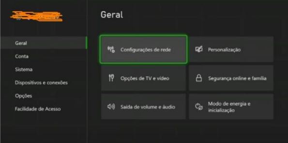
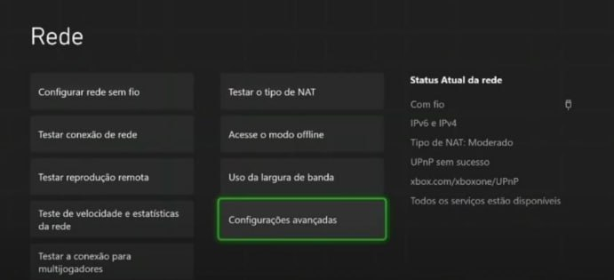
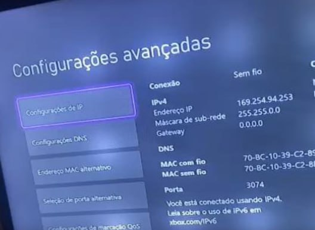
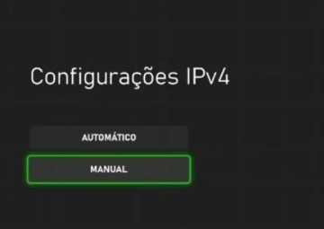
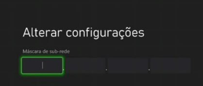

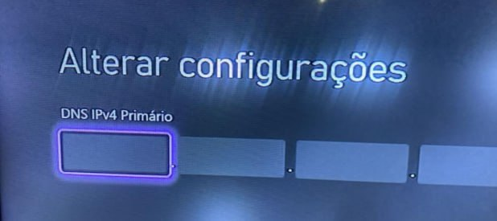
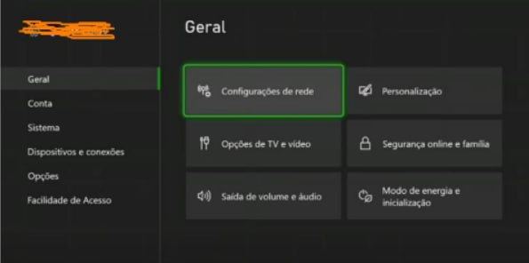
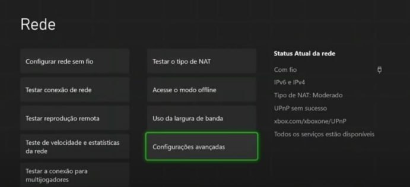
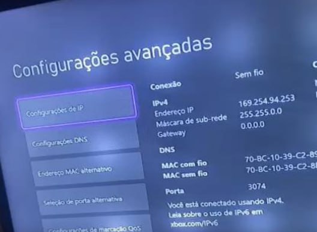
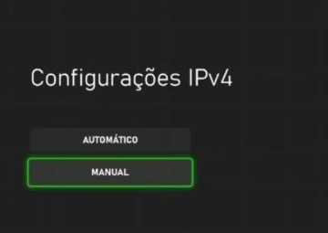
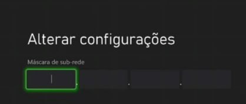
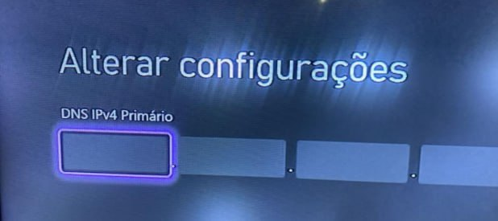
PLAYSTATION: Configurações de Rede -> Como deseja configurar a conexão à internet? Selecionar a Opção PERSONALIZAR -> Configurações de endereço IP. Selecionar AUTOMÁTICO -> IP: 192.168.100.150 -> Máscara de SubRede: 255.255.255.0 -> Gateway: 192.168.100.1 -> IPV4 Primário: 191.7.184.2 -> IPV4 Secundário: 191.7.184.3 -> Configurações MTU: AUTOMÁTICO -> Servidor Proxy: NÃO USAR
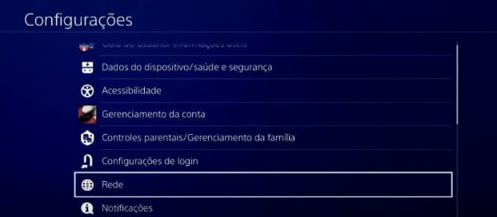
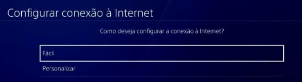
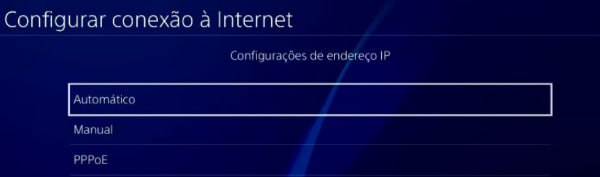
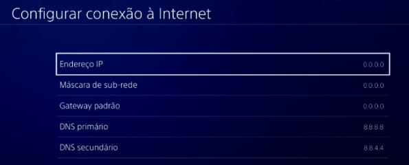
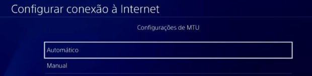
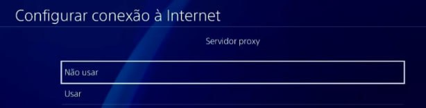
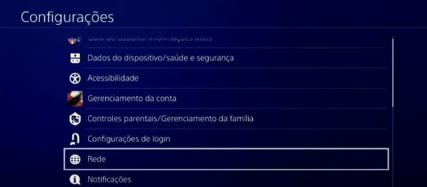
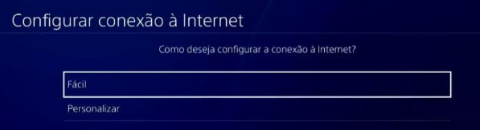
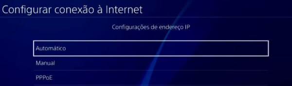
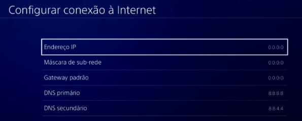
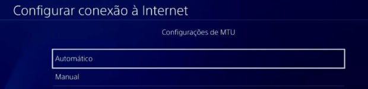
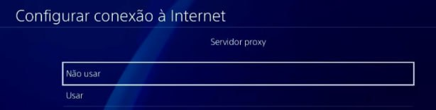
Pergunte ao cliente o que ele considera como lentidão e em quais situações ocorre. Verifique quais acessos, aplicativos e equipamentos estão sendo utilizados, além do modo de conexão (cabo ou Wi-Fi).
Verifique no sistema o sinal da fibra do cliente. Se estiver fora do padrão, isso pode causar lentidão na conexão e pode ser necessário visita técnica visite Sinal de Fibra Fora do Padrão.
Verifique o plano contratado e a quantidade de equipamento conectado, acesse Info Planos
Verifique no sistema o sinal da fibra do cliente. Se estiver fora do padrão, isso pode causar lentidão na conexão e pode ser necessário visita técnica visite Sinal de Fibra Fora do Padrão.
Verifique o plano contratado e a quantidade de equipamento conectado, acesse Info Planos
Se o cliente relatar falha em apenas um aplicativo, verifique se outros acessos estão funcionando normalmente. Caso os demais serviços estejam operando corretamente, informe que pode se tratar de uma falha específica do aplicativo.
Se houver falha em outros acessos ou mesmo que o problema pareça isolado, siga o procedimento de configuração de rede
Muitos aplicativos apresentam instabilidades na comunicação com seus servidores, podemos identificar acessando o site downdetector.com.br
Caso o cliente mencione que na rede de dados móveis funciona e na rede Panda não, oriente que são utilizados rotas de acesso diferentes. Pode ser utilizado o texto a seguir para melhor orientação do cliente
As redes de dados móveis e a internet residencial utilizam rotas diferentes para acessar os servidores dos aplicativos. Por isso, um serviço pode funcionar no 4G/5G e não na rede fixa. Isso pode ocorrer devido a diferenças no caminho de conexão, servidores utilizados ou otimizações feitas pelas operadoras. Se o problema persistir, recomendamos aguardar ou entrar em contato com o suporte do aplicativo.
Se houver falha em outros acessos ou mesmo que o problema pareça isolado, siga o procedimento de configuração de rede
Muitos aplicativos apresentam instabilidades na comunicação com seus servidores, podemos identificar acessando o site downdetector.com.br
Caso o cliente mencione que na rede de dados móveis funciona e na rede Panda não, oriente que são utilizados rotas de acesso diferentes. Pode ser utilizado o texto a seguir para melhor orientação do cliente
As redes de dados móveis e a internet residencial utilizam rotas diferentes para acessar os servidores dos aplicativos. Por isso, um serviço pode funcionar no 4G/5G e não na rede fixa. Isso pode ocorrer devido a diferenças no caminho de conexão, servidores utilizados ou otimizações feitas pelas operadoras. Se o problema persistir, recomendamos aguardar ou entrar em contato com o suporte do aplicativo.
Se o cliente relatar falha no TV Box ou IPTV, questione a marca e o aplicativo utilizado. Informamos que não garantimos o bom funcionamento desses dispositivos, pois não são homologados pela ANATEL. Desde 2023, a ANATEL tem bloqueado o sinal de serviços desse tipo.
Para melhorar a estabilidade da conexão, oriente o cliente a conectar o equipamento via cabo de rede em vez do Wi-Fi. No entanto, mesmo com essa configuração, não há garantia de funcionamento para dispositivos não homologados.
Caso o problema persista, orientamos que o cliente entre em contato com o suporte técnico ou o fornecedor do equipamento. No entanto, há alguns aplicativos e dispositivos homologados, como o WATCHTV e o Claro Box TV.
Para melhorar a estabilidade da conexão, oriente o cliente a conectar o equipamento via cabo de rede em vez do Wi-Fi. No entanto, mesmo com essa configuração, não há garantia de funcionamento para dispositivos não homologados.
Caso o problema persista, orientamos que o cliente entre em contato com o suporte técnico ou o fornecedor do equipamento. No entanto, há alguns aplicativos e dispositivos homologados, como o WATCHTV e o Claro Box TV.
1º Coleta de informações com o cliente
Deixe o cliente relatar o que ocorreu no local
Pergunte quais luzes/LEDs estão acesas no roteador, solicitando um panorama geral e não apenas sobre a luz vermelha.
Se nenhuma luz/LED estiver acesa questione se houve queda de energia no local.
Verifique se todos os cabos estão bem encaixados no roteador.
estão bem encaixados no roteador.
Solicite que o cliente desligue e ligue novamente o roteador, verificando se houve mudança nas luzes/LEDs.
Verificação no sistema:
Acesse:Cadastro do cliente → Login → Fibra → Fibra Selecionada → Potência/Resumo ONU 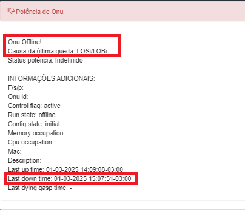ONU Offline:
LOSi/LOBi: Possível rompimento ou falha na transmissão do sinal de fibra.
LOFi: Possível queda por atenuação.
Dying-Gasp: Possível queda de energia.
Avalie o motivo da ONU estar offline e verifique o Last Down Time (última queda na conexão). → Histórico de Potenciação 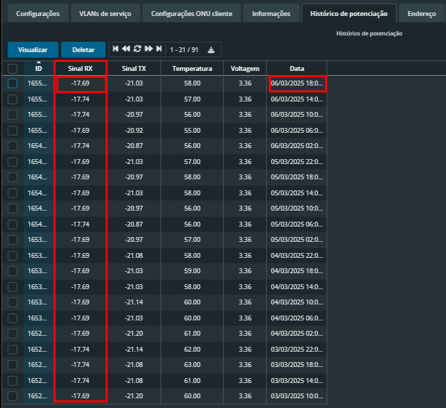 Analise a informação do RX - Sinal de Recebimento, observando o último sinal antes da queda e seu histórico→ Caixa FTTH → Logins 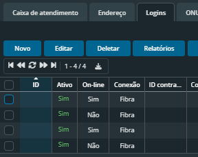 Verifique os clientes online e offline. Se todos os clientes estiverem como "Não" na opção On-line, pode indicar uma possível falha massiva. 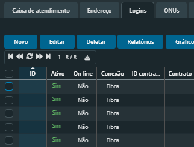 → ONUs
Verificação no sistema:
Acesse:
LOSi/LOBi: Possível rompimento ou falha na transmissão do sinal de fibra.
LOFi: Possível queda por atenuação.
Dying-Gasp: Possível queda de energia.
Avalie o motivo da ONU estar offline e verifique o Last Down Time (última queda na conexão). → Histórico de Potenciação 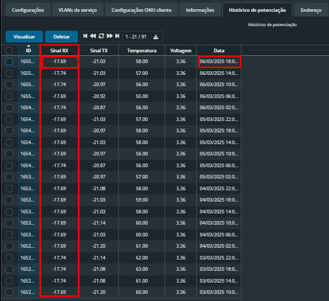 Analise a informação do RX - Sinal de Recebimento, observando o último sinal antes da queda e seu histórico→ Caixa FTTH → Logins 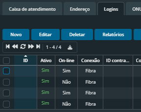 Verifique os clientes online e offline. Se todos os clientes estiverem como "Não" na opção On-line, pode indicar uma possível falha massiva. 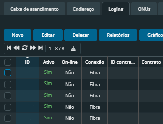 → ONUs
O sinal de fibra fora do padrão pode causar quedas de conexão, lentidão, falta de acesso, entre outros problemas.
Possíveis causas para o sinal de fibra fora do padrão:
Fibra dobrada, amassada, torcida ou mordida, tanto dentro quanto fora do local relatado pelo cliente.
Conector danificado ou sujo.
Cabo mal encaixado.
O sinal de fibra deve sempre estar acima de -25 dBm. Caso o cliente tenha sinal de -26 dBm ou inferior, é necessário revisar as possíveis causas mencionadas acima e agendar uma visita técnica para o devido reparo se assim a falha se manter.
NECESSÁRIO FRISAR QUE O SINAL É NEGATIVO
Possíveis causas para o sinal de fibra fora do padrão:
O sinal de fibra deve sempre estar acima de -25 dBm. Caso o cliente tenha sinal de -26 dBm ou inferior, é necessário revisar as possíveis causas mencionadas acima e agendar uma visita técnica para o devido reparo se assim a falha se manter.
NECESSÁRIO FRISAR QUE O SINAL É NEGATIVO